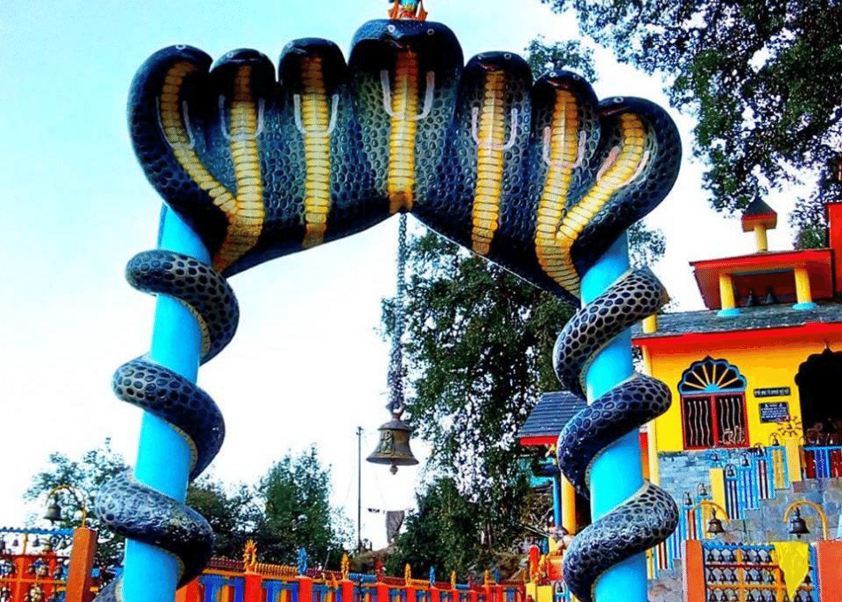
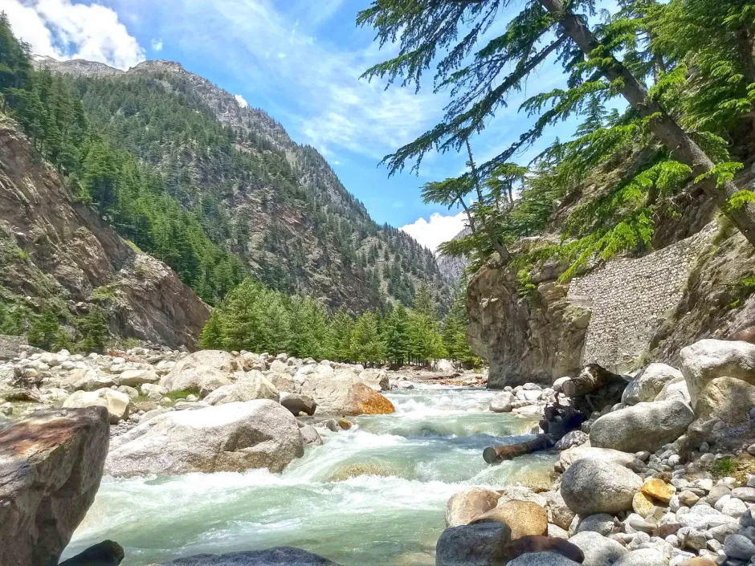
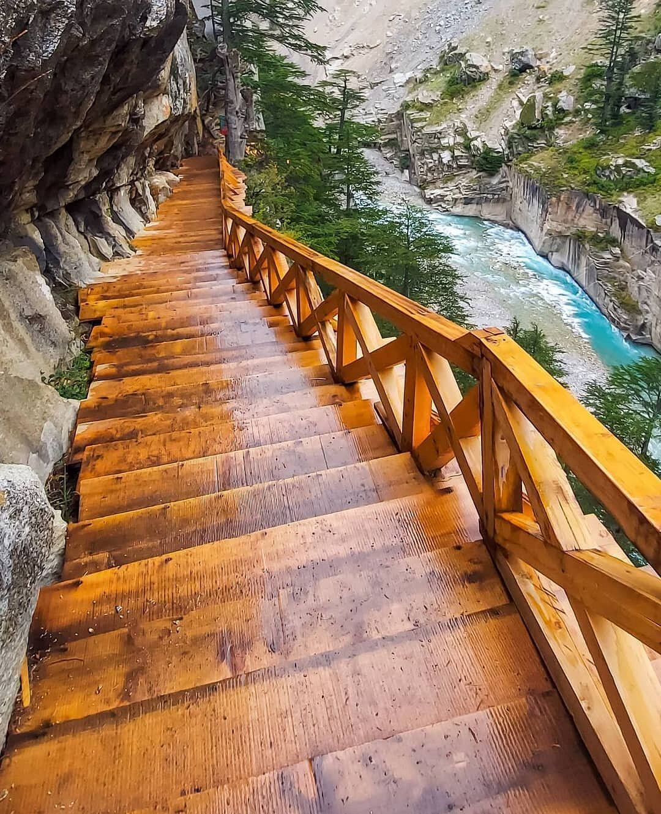
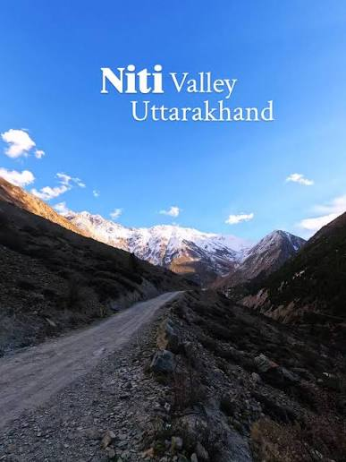
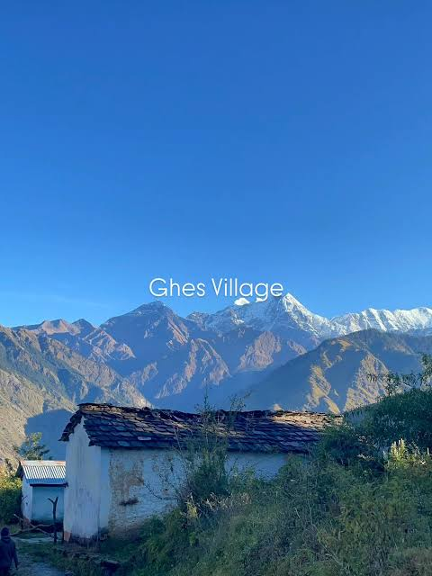

Garhwal Region (7 Districts)
High mountain passes, ancient stone settlements, and pristine lakes.
1. Tehri Garhwal (Near New Tehri)

Koti Kanasar & Kyari Village
Near Tehri LakeA quiet rustic hamlet overlooking deep forest valleys near New Tehri. Surrounded by centuries-old wooden ancestral homes, away from commercial lake water sports crowds.

Pavitra Sem Mukhem
High Ridge TrailA pristine hilltop dedicated to Lord Nagaraja sitting at 2,900 m. Offers sweeping 360-degree views of snow peaks and untouched oak forests overlooking the Bhagirathi valley.
2. Uttarkashi District

Bagori Village (Harsil Valley)
Tribal HeritageAn ancient wooden Bhotia settlement near Harsil. Known for handwoven sheep-wool shawls, ornate Tibetan-style carved doorways, and apple orchards.

Gartang Gali
Historic Silk RouteA 150-year-old cliffside wooden bridge cantilevered on a vertical granite wall inside Nelong Valley. Used historically by Indo-Tibetan merchants.
3. Chamoli District

Niti Valley & Urgam
Border SettlementTucked away near the Indo-Tibet border, Niti offers stark cold-desert landscapes and traditional stone houses, while Urgam valley is home to Kalpeshwar temple.

Ghesh & Wan Village
Base for BugyalsSecluded high-altitude farming villages famous for terraced kidney-bean fields and serving as the gateway to Bedni and Ali Bugyal alpine meadows.
4. Rudraprayag District

Ransi & Kalimath Valley
Cultural ValleyQuiet river valleys with stone-paved paths, ancient slate roofs, and organic cardamom farms, bypassing the main Kedarnath highway commotion.

Triyuginarayan Backtrails
Historic SiteBeyond the main eternal flame temple lie untouched apple villages and pine meadows where local hosts welcome travelers with traditional Pahadi food.
5. Pauri Garhwal District

Khirsu Village
Pine RidgeA peaceful oak and deodar ridge offering clear views of 300 Himalayan peaks. Known for old apple orchards and silent forest walks.

Tarekeshwar Forest Ridge
Sacred GroveDensely shaded by giant deodar trees where sunlight barely touches the forest floor. Features rustic homestays run by native caretakers.
6. Dehradun District (Rural Belts)

Jaunsar-Bawar (Lakhamandal)
Tribal CultureA distinct cultural belt featuring unique wooden temples, ancient Mahabharata archaeological ruins, and traditional Jaunsari stone houses.

Thano & Maldevta Ridge
Foothill EscapeQuiet forest river valleys hidden just behind Dehradun city, known for pristine clear-water streams, fruit farms, and birdwatching trails.
7. Haridwar District (Rural Belts)
Chilla Forest Edge (Rajaji)
Wildlife BufferA serene eco-belt on the edge of Rajaji National Park. Features organic farm stays away from the noisy main Haridwar ghats.
Piran Kaliyar Rural Outskirts
Canal HeritageQuiet canal-side villages surrounded by mango orchards and sugarcane fields, offering calm rural retreats near historic aqueducts.
Kumaon Region (6 Districts)
Fruit orchards, panoramic glacier views, and traditional Aipan art culture.
1. Pithoragarh District
Dharchula & Darma Valley
High Glacier ValleyA dramatic valley near the Panchachuli peaks. Features stone villages with vibrant Rung tribal heritage and alpine meadows.
Munsiyari Backcountry (Darkot)
Handloom VillageFamous for wooden ancestral homes where locals weave Angora wool craft, set directly against the snow towers of Panchachuli.
2. Almora District
Jageshwar Backwood (Artola)
Cedar ForestQuiet ancestral hamlets set deep within giant deodar forests, home to ancient Aipan floor art traditions and organic herbal teas.
Kasardevi Ridge (Crank's Ridge)
Geomagnetic BeltPositioned on a rare Van Allen radiation geomagnetic belt. Famous for silent pine trails, sunset ridge views, and artist retreats.
3. Nainital District (Rural Belts)
Pangot & Kilbury
Bird SanctuaryTucked away from commercial Nainital lake crowds, Pangot is a quiet hamlet nestled in oak forest, home to over 500 species of birds.
Mukteshwar Fruit Belts (Ramgarh)
Fruit OrchardsRolling hills packed with plum, peach, and apricot trees. Vacant colonial-era and stone homestays offer pristine valley views.
4. Bageshwar District
Kausani Back-Country (Anasakti)
300 km Peak ViewSurrounded by tea gardens and pine ridges. Offers unobstructed sunrise views over Nanda Devi, Trishul, and Panchachuli peaks.
Pindari Trail Base (Khati Village)
Last Inhabited VillageThe final inhabited village on the Pindari Glacier trek route. Features stone houses with slate roofs and traditional wooden hearths.
5. Champawat District
Abbott Mount
Colonial HeritageA quiet European-style clearing surrounded by dense pine forests. Features 13 isolated colonial cottages built in the early 1900s.
Lohaghat & Mayawati Ashram
Spiritual SanctuaryA peaceful pine-covered town near the Saryu River, known for medicinal herbal tea farms and historical ashram forest trails.
6. Udham Singh Nagar District
Nanakmatta Rural Wetlands
Lake BufferSerene agricultural and lake wetlands surrounded by sugarcane farms, offering unique rural cycling routes and migratory bird spotting.
Drona Sagar Agro-Belts
Ancient Pond SiteQuiet farm hamlets around historic water tanks near Kashipur, surrounded by mustard fields and fresh organic dairy farms.